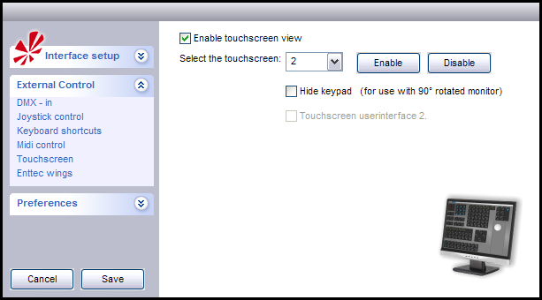

Table of Contents
Touchscreen UserInterface 2
FreeStyler allows for a second screen to be displayed which can be used to control FreeStyler.
This second screen can be on a second monitor and can be a touch screen device as well.
Touch Screen Setup
To set up your 2nd monitor to display a touch screen you need to into the menu Setup>FreeStyler Setup then select External Control from the left of the dialogue that appears. Now select Touchscreen.

The above image shows the Touchscreen setup dialogue.
- The tick box Enable touchscreen view enables or disables the view of the touchscreen interface. Think of this as an allow touchscreen.
- Select the touchscreen this drop down boxes tells your computer which monitor to display the touchscreen on.
You need to tick the Enable touchscreen view before this becomes active. Normally 1 is your main monitor and 2 is your second monitor, but it may not be depending on your configuration of your computer.
The two buttons Enable and Disable do exactly that Enable or disable the touchscreen on the monitor you chose. - Hide keypad (for use with 90° rotated monitor) tick box is to either display or not to display the keypad when you are using a monitor that has been rotated into portrait view. I do not have one of these monitors and it displays on mine regardless of it being ticked or not.
This for use only if you are using Touschscreen userinterface 1. - Touchscreen userinterface 2.. Ticking this box enables a second type of touchscreen interface where you can customise the arrangement of buttons ands controls to your liking. Unticked it users the predefind touchscreen interface.
Once you have set the various controls on this page please remember to click the Save button.
Touchscreen User Interface 2
With Touchscreen userinterface 2 you can create your own Touchscreen interface. now you see the Deafult look.
also nice to now You doesn't need a touchscreen to acces this interface, you can also use the mouse to do everything.
so everwanted to create your own look This way you can do it.
{kind=link}
What can you do with The Inteface
if you open the Options on the toolbar, there will be some options to modify the Touchscreen page.
-Open: loads your creation.(FTS file)
-Save: Save Your Creation!
-Add buttons and sliders: Your you have a list of all the Buttons and slider you can use.
-Enable Mousepad: this wil enable a Pan and tilt window.
-Remove all buttons and sliders: Do i need to say more?
-Captions: Here you can decide if you like to have the Normal Button text or Numbers or your own text.
{kind=link}
Add Buttons and sliders
If you press on “Add buttons and sliders” there will pop up a other window.
Here you can Drag&Drop all the funtions on the screen.
the system will automatic Add a Button or fader.
{kind=link}
Buttons
here you see Touchscreen pages buttons and you have 6 of them, so this mean you can have other buttons, slider and Touchpad on differnt Touchscreen pages.
If you press with the rightmouse button on a touchscreen button you will have these options:
-Color: you have 15 differnt types of Buttons therefore 15 differnt colors. But you can also use a button picture you made.More info
-Change text: The the text on a button.
-Page: here you can select on which touchscreen page the button should be on.
-Remove button: do i need to say more?
{kind=link}
{kind=link}
Sliders
Here you see the Faders There is only 1 type of fader and you can not change the Looks of the fader, you can only change the Background color from the Fader.
{kind=link}
{kind=link}
Toucpad

Background
You can also use a Background you made.More info
The above image shows a blank Touchscreen userinterface 2. This is before any buttons or controls have been added.
The grid you see is an image that I created to help me line up the buttons and other controls on this display. You can create your own background images. The image needs to be stored in the FreeStyler\Images\Touch folder and needs to be called background.bmp. It should be created at a size that matches the resolution of you second monitor but take 20 pixels off of the height to allow for the menu bar at the top of the screen. So for example my second monitor has a resolution of 1440×900 so I created the image that was 1440×880.